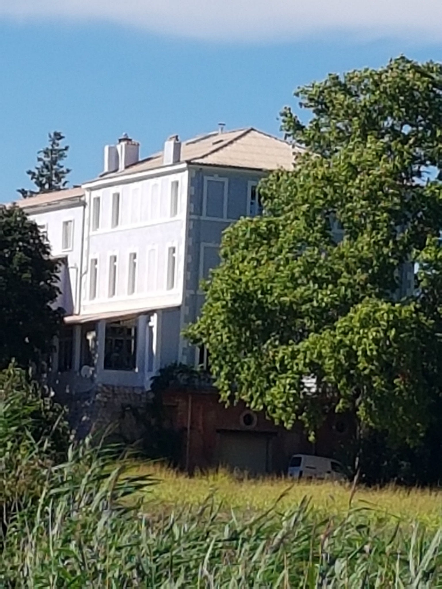
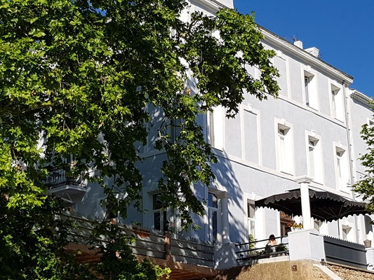
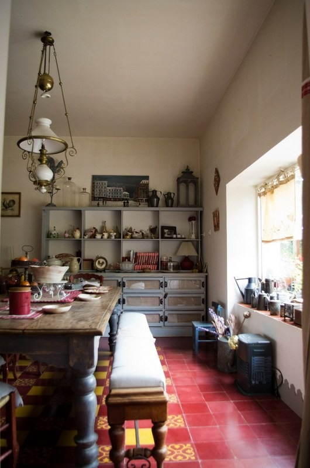
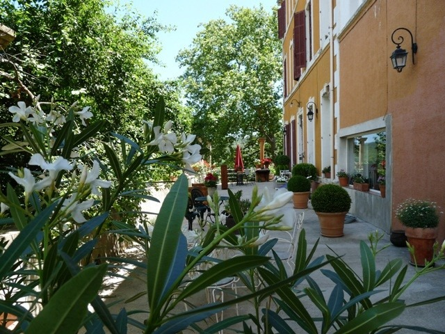
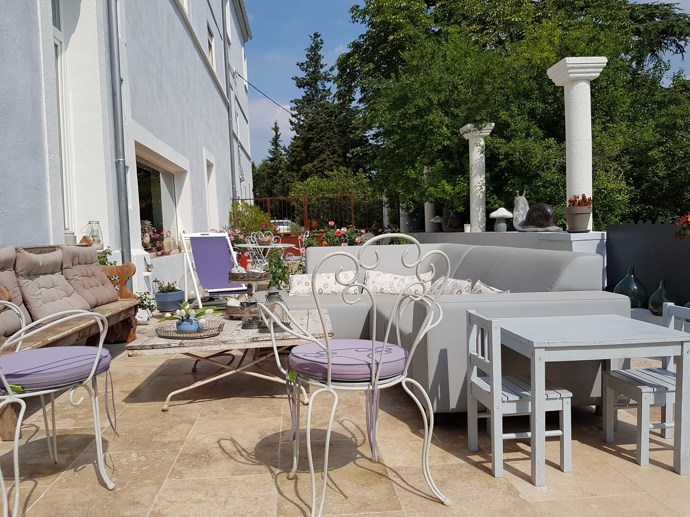
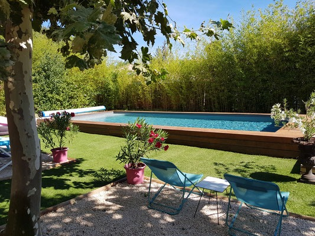
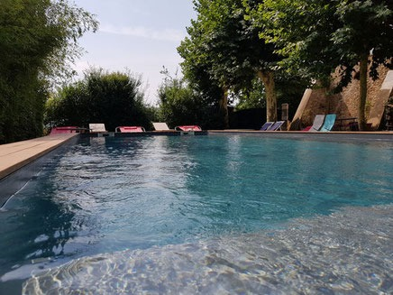

Une bâtisse, des vignes, et deux siècles d'histoire.
Bâtie en 1868, transmise de famille en famille, devenue domaine viticole au XIXᵉ, restaurée par nos soins en 2002. Voici son histoire - et la nôtre.

Bâtisse d'origine
Construction de la maison de maître par la famille Bouvet, propriétaires terriens de Seillons. Pierre de Cassis, tuile romaine, volets bois.
Devient hôtel restaurant
La bâtisse est transformée en hôtel restaurant. Nouvelle vie pour la maison de maître.
Laissée à l'abandon
L'hôtel ferme ses portes. La maison se ferme, les volets aussi. Le domaine entre en sommeil.
Notre arrivée
Nicolas et Patricia visitent un dimanche d'octobre. Coup de cœur immédiat. Achat acté en mars.
Ouverture aux hôtes
Après dix-huit mois de travaux — toiture, plomberie, volets, salles d'eau — les cinq chambres ouvrent au printemps.
Une maison de maître provençale.
La maison principale, en pierre de pays, abrite cinq chambres, deux salons, une grande salle à manger et une cuisine ouverte sur la terrasse. Les volets, refaits à l'identique en 2016, gardent leur bleu lavande passé.
À l'intérieur, parquets cirés, tomettes anciennes, cheminées d'origine. Nous avons gardé tout ce qu'on pouvait garder.
- Surface
- 420 m² habitables
- Étages
- Rez + 2
- Volets
- Bleu lavande, bois ciré




Fait maison, servi à l'ombre des arbres.
Une grande terrasse ombragée par les arbres accueille le petit-déjeuner. Tout est fait maison : salades de fruits frais, gâteaux et confitures, croissants, pain frais, jus de fruits, thé et café.
Dix mètres, chauffée d'avril à octobre.
Bassin traditionnel de dix mètres sur quatre, intégré dans le parc, chauffé à 28° en début et fin de saison. Transats, parasols, et l'ombre des platanes à dix mètres.
- Dimensions
- 10 × 4m
- Profondeur
- 1,40m partout
- Température
- 28° chauffée
- Saison
- Avril → Octobre


Le couple derrière la maison.

Nous nous sommes rencontrés dans le Sud en 1998, autour d'une bouteille de Bandol. Beaucoup de voyages plus tard, nous avons posé nos valises ici. C'est la meilleure décision que nous ayons prise.
Patricia s'occupe de faire les chambres et de l'accueil. Nicolas répond aux mails, tient la cave, est le roi de la plancha et prépare une délicieuse tapenade maison.
Nous parlons français, anglais, espagnol et un italien acceptable. Nous adorons partager une bouteille, indiquer les meilleurs sentiers et garder un peu de tarte tatin pour le retour.